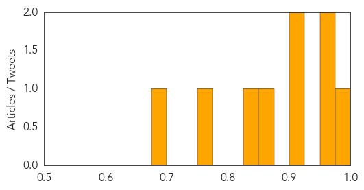
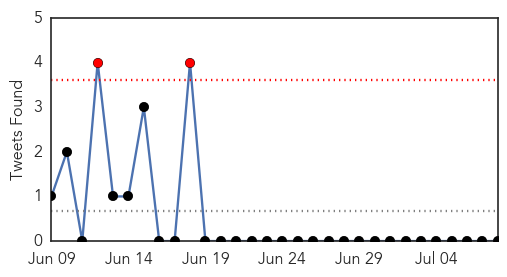

Meningitis
30-Day Web Trend
3 alerts, 0 warnings

30-Day Twitter Trend
0 alerts, 0 warnings

Article Locations

Article Confidences
Top Articles:
- 0.993
- Zambia: Meningococcal meningitis outbreak in Kabompo High School kills three
- 0.966
- Quarantine rules for Haj pilgrims unveiled
- 0.963
- Quarantine rules for Haj pilgrims unveiled
- 0.912
- Child is critically ill after swimming in Pope County lake
- 0.902
- No more cases of meningitis reported following Michigan child's death
- 0.863
- Zambia National Broadcasting Corporation
- 0.842
- Teens Most At Risk From New Lethal Form of Meningitis
- 0.766
- Boy Contracts Rare Amoeba Brain Infection After Swimming In Lake
- 0.687
- Child develops symptoms of infection after swimming in Minnesota lake
Top Tweets:
-
No tweets found for Jul 08, 2015
MERS
30-Day Web Trend
0 alerts, 6 warnings

30-Day Twitter Trend
2 alerts, 0 warnings

Article Locations

Article Confidences

Top Articles:
- 0.999
- Middle East respiratory syndrome coronavirus (MERS-CoV) – The Philippines
- 0.999
- MERS Vaccine & Infection
- 0.999
- (News Focus) Ignorance, unique culture fuel MERS outbreak in S. Korea
- 0.998
- The Scientist Magazine®
- 0.998
- Cebu News, The Freeman Sections, The Freeman
- 0.998
- MERS-Cov Outbreak In The Philippines? Authorities Contain 2 Cases — Chinatopix
- 0.996
- Foreigner tests positive to MERS in Manila
- 0.994
- Department of Health confirms MERS in Philippines
- 0.987
- Korea reports MERS deaths; WHO details Philippines case
- 0.985
- Foreigner recovering from MERS-CoV – DOH
- 0.971
- Philstar Mobile
- 0.965
- 14 contacts of foreigner with MERS quarantined
- 0.948
- SOUTH KOREA Seoul, two more MERS victims brings toll to 35
- 0.942
- MERS-CoV Case in the Philippines is Reported to WHO
- 0.939
- Health office urges Kapampangan OFWs to cooperate in MERS-CoV screening
- 0.926
- Travel ban on Haj not under consideration
- 0.821
- Confirmatory tests on Filipina companion of foreigner positive with MERSCoV yield negative; 7 other companions still without symptoms – DOH
Top Tweets:
-
No tweets found for Jul 08, 2015